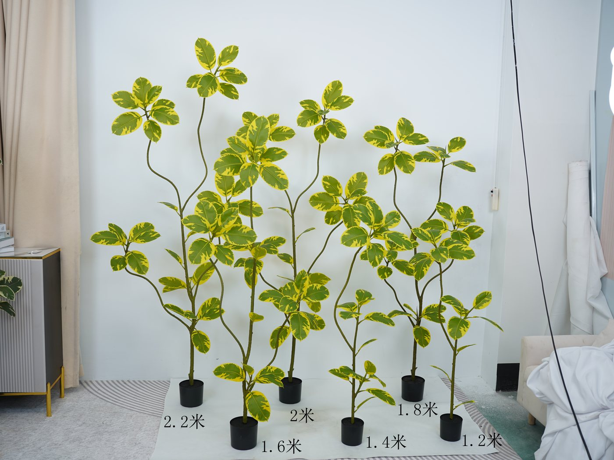
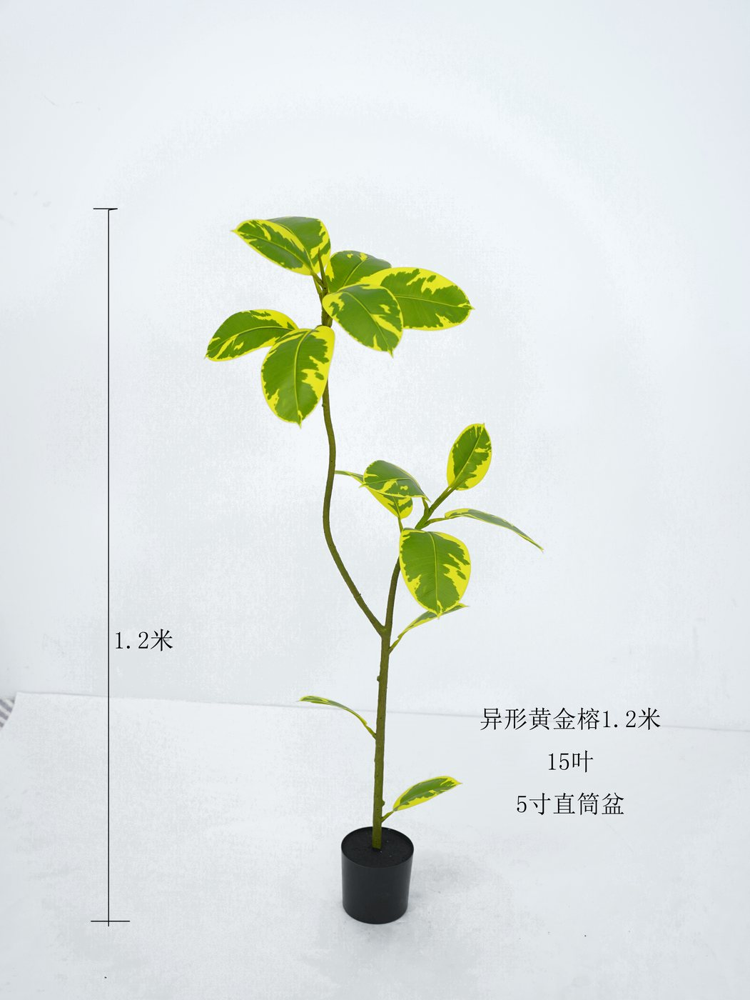
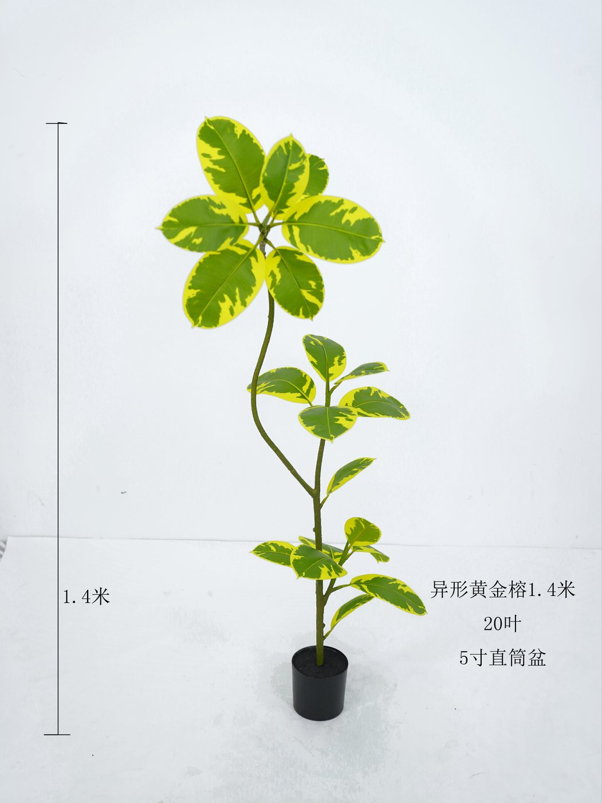

Ficus & Rubber Plants
Artistic Golden Fig
Artistic Golden Fig is a classic evergreen tree well suited to offices, showrooms, and reception areas. The photographs show examples in heights from 120–220 cm. This is a factory photograph of the actual product; exact dimensions, packing, MOQ, lead time and price are confirmed by the seller on inquiry.
Opens your email application; sending happens there.
Product information
Artistic Golden Fig is a classic evergreen tree well suited to offices, showrooms, and reception areas. The photographs show examples in heights from 120–220 cm. This is a factory photograph of the actual product; exact dimensions, packing, MOQ, lead time and price are confirmed by the seller on inquiry.
Specifications
| Heights (from photos) | 120–220 cm |
|---|---|
| Product code | LC-N072 |